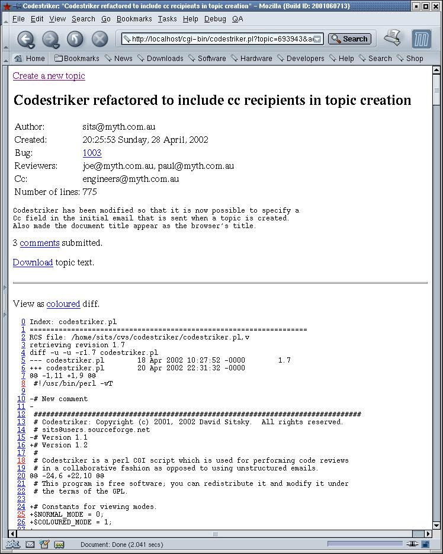
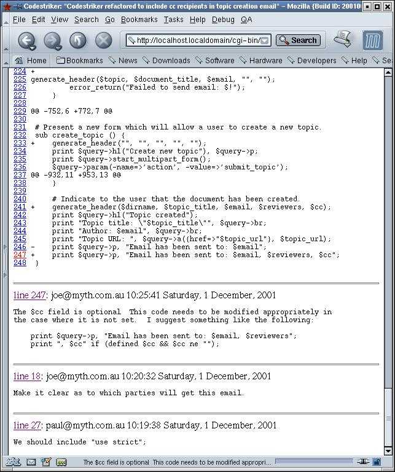
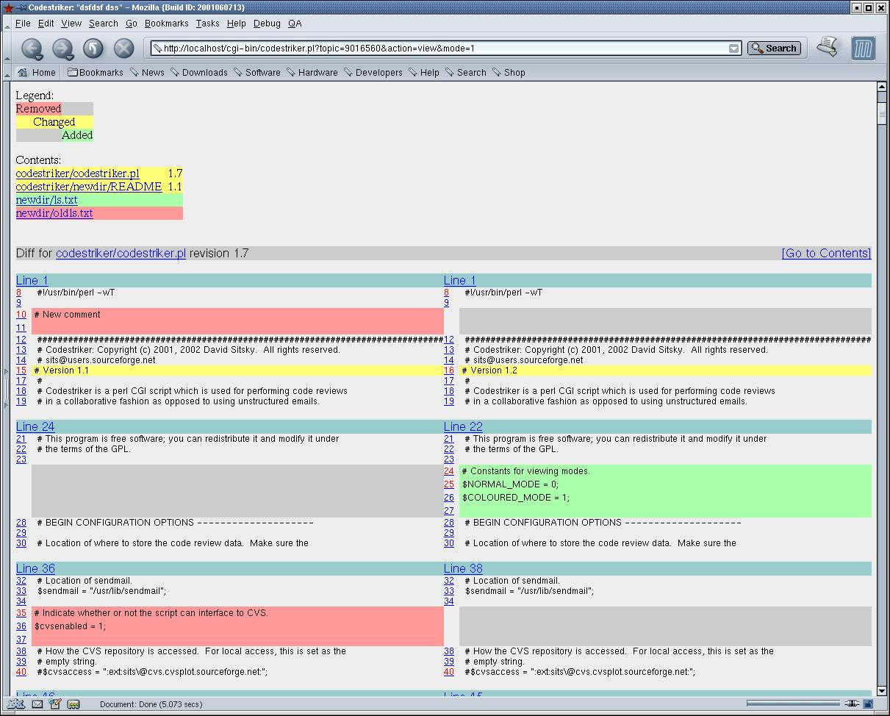

Codestriker: Copyright (c) 2001, 2002 David Sitsky. All rights
reserved.
sitsNOSPAM@users.sourceforgeNOSPAM.net
The latest version of codestriker can be obtained from: http://prdownloads.sourceforge.net/codestriker/codestriker-1.1.tar.gz
Codestriker sourceforge project information can be found from http://sourceforge.net/projects/codestriker.
Codestriker is a perl CGI script which is used for performing code reviews in a collaborative fashion as opposed to using unstructured emails.
Authors create code review topics, where the nominated reviewers will be automatically notified by email. Reviewers then submit comments against the code on a per-line basis, and can also view comments submitted by the other reviewers as they are created. Emails are sent to the appropriate parties when comments are created, as an alert mechanism. The author is also free to submit comments against the review comments.
Once all reviewers have finished, the author has all review comments available in a structured fashion, as opposed to a pile of unstructured emails.
This example will show how a new topic is created, how it is viewed, and how new comments can be submitted.
A new code review topic is created by filling in the form in the create topic screen.
The Topic title field provides a summary of
the new topic. The Topic description
provides a description as to what the code changes are,
which needs to be informative, as this is the text that
is sent with the topic creation email.
The actual code itself is entered either pasted inline
into the Topic text form element, or uploaded
from a file. In practical use, often the text contains
the output of the command cvs diff -uN or
simply diff -ruN, which will effectively shows
the proposed code differences. For the review of new
files, the file itself could simply be uploaded.
The following three email address fields are stored into a
cookie, as they will often be used again for subsequent
topic creations. The email address is also
used when submitting comments. Once the submit button is
pressed, an email is sent to all of the email addresses
indicating that a new topic has been created, with the URL
indicating how to access the topic.
When viewing a topic, the title appears at the top,
followed by the email addresses of the people involved,
and what their respective roles are. The topic
description follows. The number of comments made against
this topic is then shown. The code text is then shown in
its entirety, followed by the submitted comments.
Clicking on comments will take the browser to
the start of the comments.
A comment can be made against any line by simply clicking on the line number. Lines which are coloured red indicate that comments have already been submitted against it. By moving the mouse over these red lines, a digest of the comment will appear in the browser's status line. For those browsers which support it, a tooltip will also popup containing the comment digest.

In this example, the user scrolls to the bottom of the page, and clicks on line number 247.
The user is then fills out the form as shown in the following diagram.
A few lines are shown indicating the code of interest.
The line marked in red is the line the comment is being
made against. Clicking on increase or
decrease will increase or decrease the the
number of surrounding lines respectively. If cookies are
enabled in your browser, the email address in the form
will be remembered, so that you don't need to enter it in
for all subsequent comments.
The comments field is used for entered in
your comments. The submit button will lodge your comment,
and take you back to the viewing page, centered on the
line you just made your comment against, as shown in the
following diagram. Note how line 247 is now rendered red,
and all comments are presented in reverse chronological
order.

Codestriker provides special support when the topic
contents are in the form from the command cvs diff
-uN. Although not shown above, the topic view
screen has a link at the top, to alternate between coloured
diff and the textual view. An example of a coloured diff
can be seen below, which some developers find easier to
read than an ordinary diff.

Typically, a CVS repository is used for managing a team's
source codes. Developers create reviews by issuing the
command: cvs diff -uN, which contains all of
the changes the developer has made.
Codestriker can be configured to integrate with a CVS repository. Once it knows the location of the CVS repository (via a configuration parameter in the script), the text of each diff segment (regardless of which viewing mode is used) will have a hyperlink, which if clicked, will create a popup window which contains the appropriate file taken from CVS, centered on the line in question. This has proved to be very useful when those reviewing diffs which don't provide enough contextual information to the reviewer. Click here to see a screenshot of this.
Although not shown in the above screen shots, there is CVS integration for textual mode as well. Each diff block hat demarcated with the "@@ ... @@" characters will also be hyperlinked to the CVS repository.
The latest version of codestriker can be obtained from: http://prdownloads.sourceforge.net/codestriker/codestriker-1.1.tar.gz
Codestriker sourceforge project information can be found from http://sourceforge.net/projects/codestriker.
I use codestriker as a tool behind our company's firewall for performing code reviews within our engineering team. For RedHat 7.1, the installation is simply the following as root on the internal web server:
cd /var/www/cgi-bin cp /from/installed/location/codestriker.pl . mkdir /var/www/codestriker chown apache.apache /var/www/codestriker
Codestriker stores all of its topic data and comments by
default in /var/www/codestriker. This
location can be changed by the configuration variable at
the start of the script. This directory needs to be owned
by the user which runs httpd, since the
script creates files and directories under the
/var/www/codestriker directory. The username
is typically either nobody or apache. Use the ps
auxww | grep httpd command to find out.
For deployments outside an intranet, I would suggest using
apache's .htaccess mechanism to limit access
as to who can execute the script, as an extra security
precaution.
Obviously there are many enhancements that can be made to this tool. My initial goal was to build something quickly and it get it out there for real use, which will then hopefully provide further input to future enhancements. Something sort term is to optimise the HTML output to use CSS to reduce the size.
Please send me an email sitsNOSPAM@users.sourceforgeNOSPAM.net
for your comments or submit them directly on the sourceforge project page http://sourceforge.net/projects/codestriker.
{kind=link}